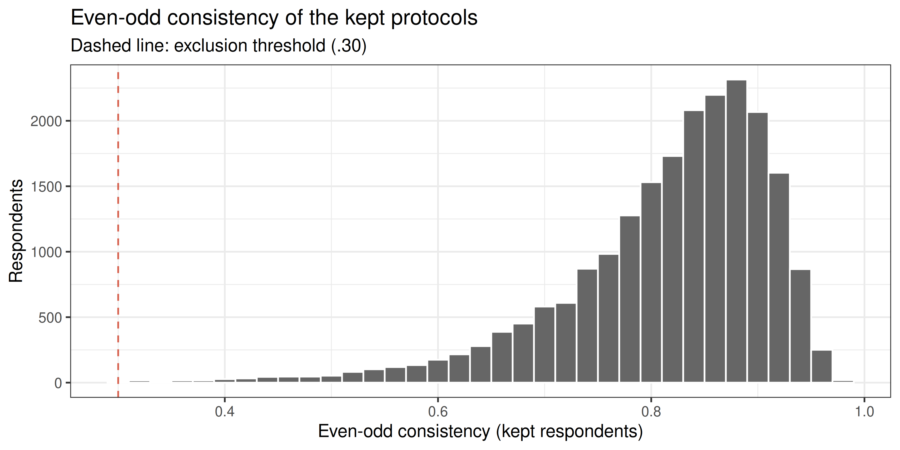
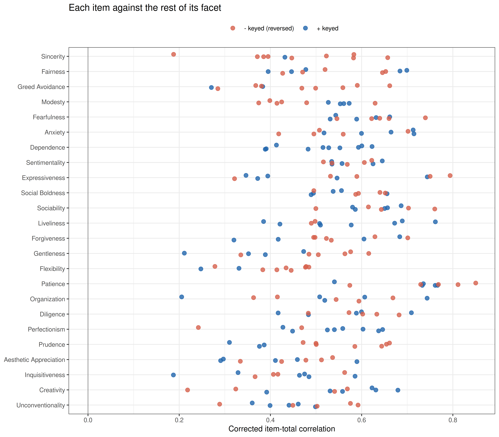
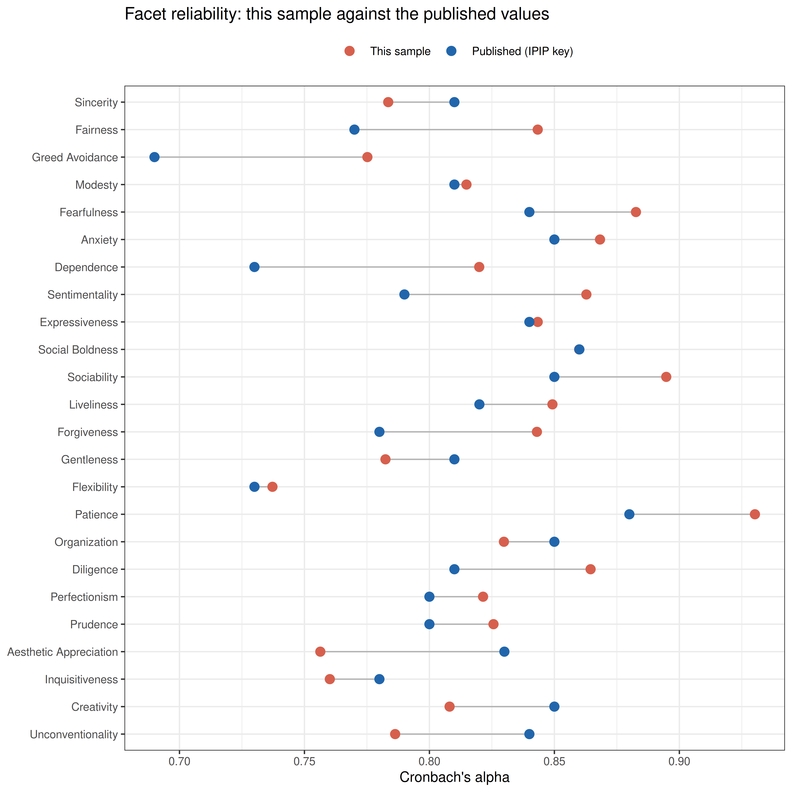
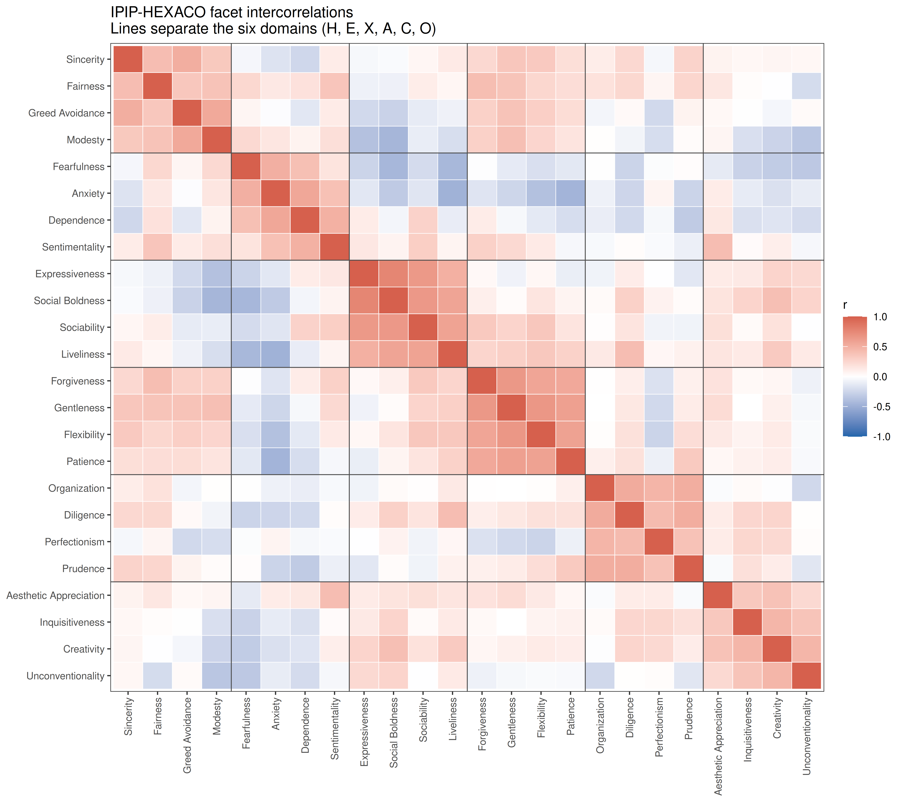
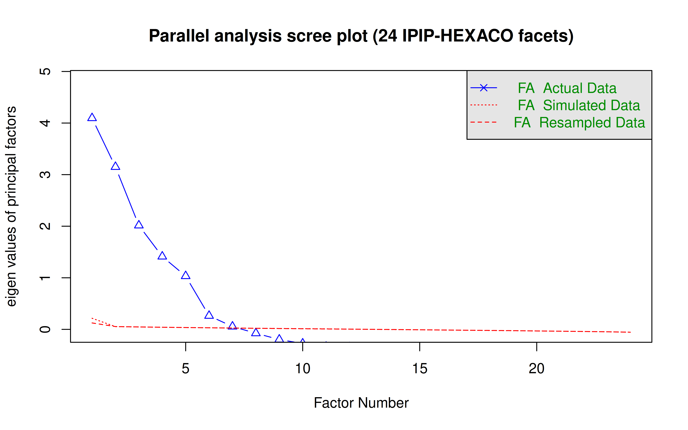
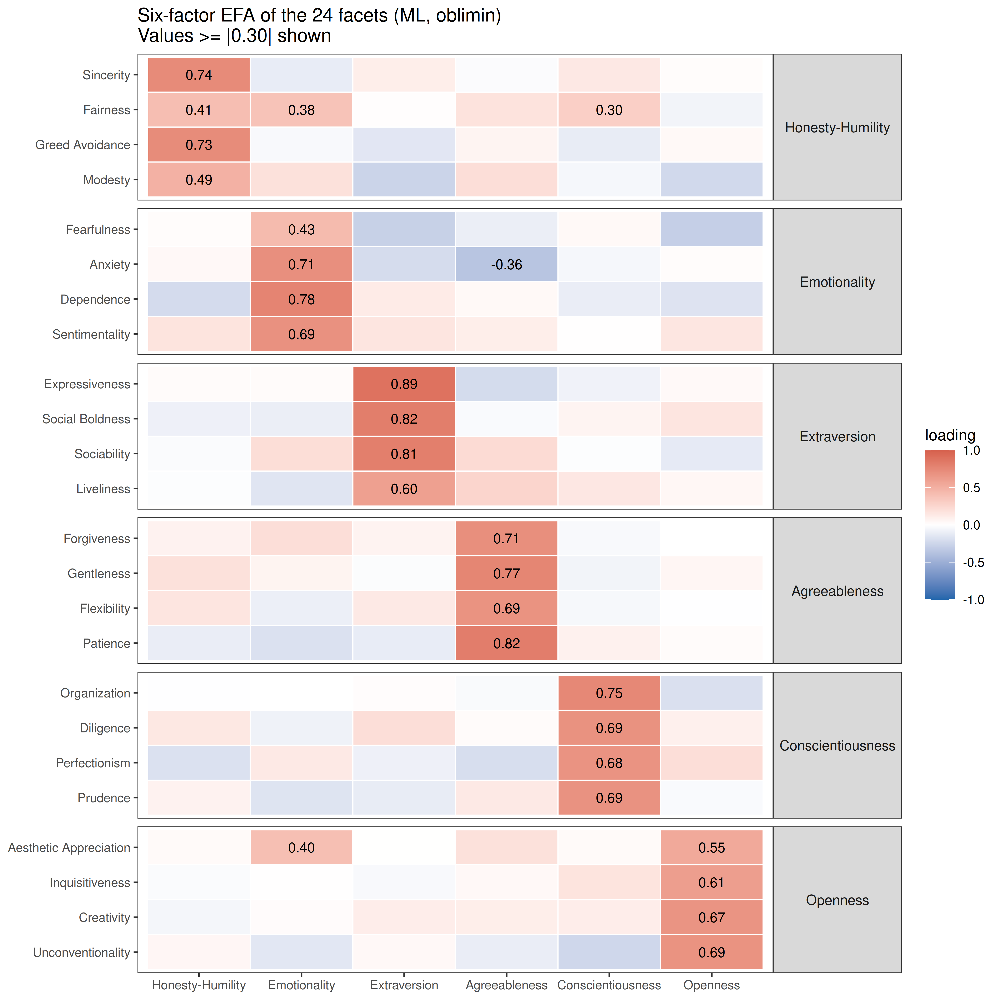
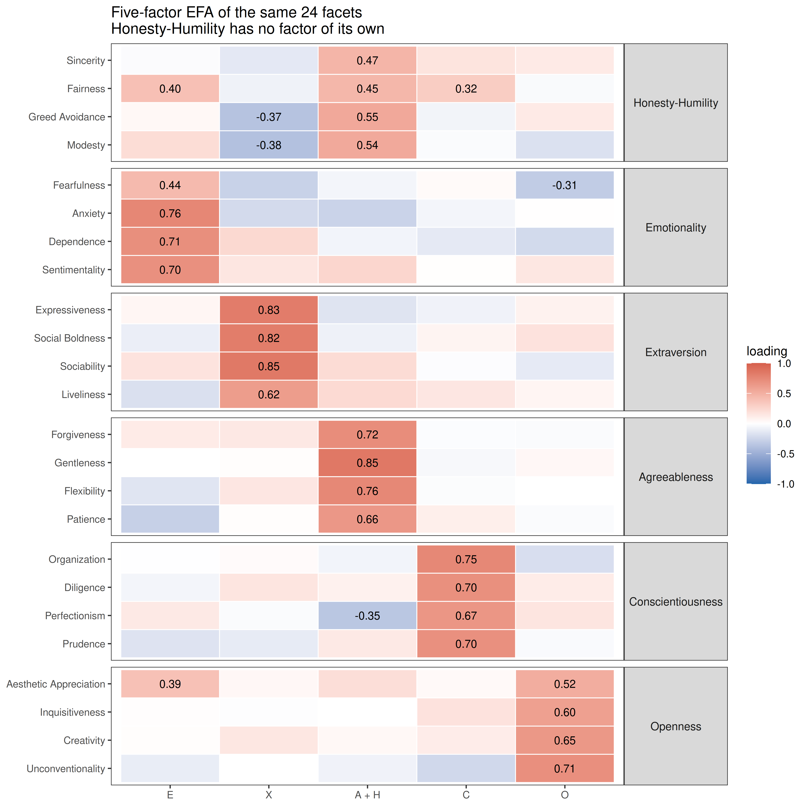
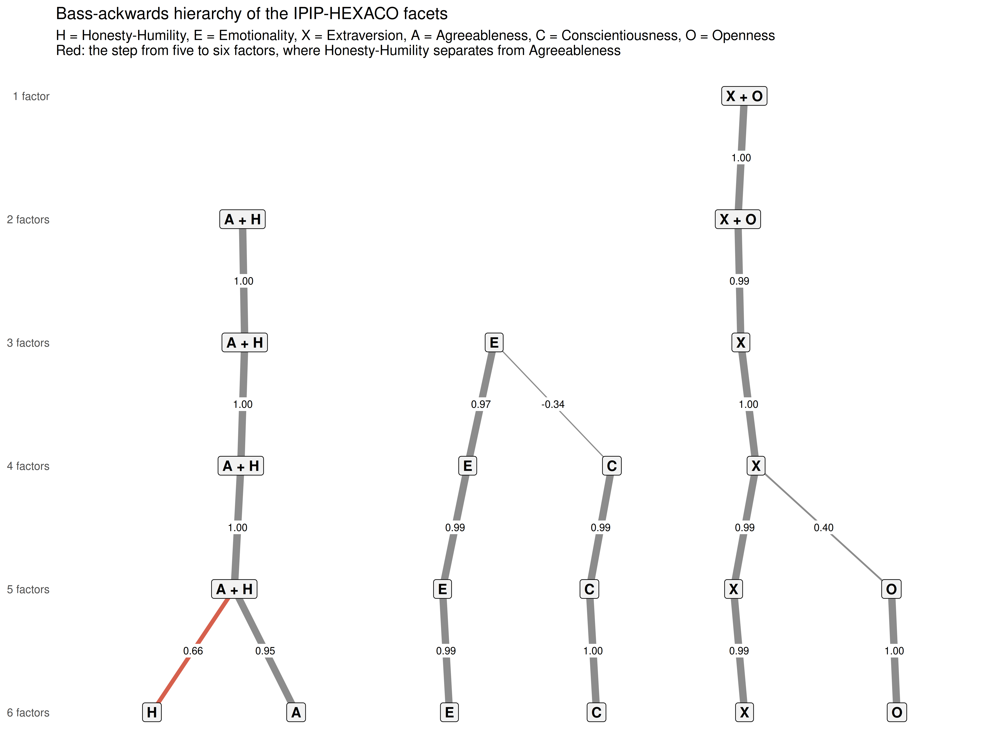

| Rule | Excluded | Remaining |
|---|---|---|
| All 240 items answered | 52 | 22,734 |
| Understood the instructions (at least slightly agree) | 626 | 22,160 |
| Answered accurately (at least slightly agree) | 561 | 22,225 |
| At least 2 seconds per item | 442 | 22,344 |
| Even-odd consistency at least .30 | 95 | 22,691 |
| All rules together | 1,541 | 21,245 |
HEXACO Validation: Six Factors or Five?
Description
The HEXACO model (Lee & Ashton, 2004; Ashton & Lee, 2007) describes personality with six broad factors instead of the Big Five: Honesty-Humility, Emotionality, eXtraversion, Agreeableness, Conscientiousness and Openness to Experience. The new factor is Honesty-Humility (sincerity, fairness, greed avoidance, modesty). Lexical studies in many languages found it as a sixth factor when the adjectives people use to describe each other are analysed. HEXACO Emotionality and Agreeableness are also rotated versions of Big Five Neuroticism and Agreeableness: sentimentality moves into Emotionality, and anger (low patience) moves into low Agreeableness.
This tutorial validates the IPIP-HEXACO scales (Ashton, Lee & Goldberg, 2007), a public-domain version from the International Personality Item Pool with 240 items: 10 items for each of 24 facets, 4 facets per factor. Respondents rated each statement on a 1-7 scale (1 = strongly disagree, 4 = neutral, 7 = strongly agree). Its central question is the one that separates HEXACO from the Big Five measured in the BFI-44 and IPIP-50 tutorials: do the data need a sixth factor, and what happens to Honesty-Humility when only five are allowed?
Data and cleaning
The data come from the Open-Source Psychometrics Project (HEXACO.zip, 22,786 records). The codebook does not give the keying of the items, so the scoring key in data/hexaco_key.csv was matched item by item to the official IPIP-HEXACO key, which also lists the published alpha of each facet. data/prepare_hexaco.R applies the cleaning rules below.
Besides two validity questions and the completion time, the cleaning uses the even-odd consistency index (Johnson, 2005): each facet is split into its odd- and even-numbered items, the 24 odd and 24 even half-scores are correlated within the person, and the correlation is corrected to full length with the Spearman-Brown formula. Someone who reads the items gives similar answers to the two halves of a facet (typical values around .8); someone who answers at random does not (values near 0).
Code
ggplot(df_hexaco, aes(x = even_odd)) +
geom_histogram(binwidth = 0.02, fill = "grey40", colour = "white") +
geom_vline(xintercept = 0.30, colour = "#d6604d", linetype = "dashed") +
labs(x = "Even-odd consistency (kept respondents)", y = "Respondents") +
theme_bw(base_size = 10) +
ggtitle("Even-odd consistency of the kept protocols",
subtitle = "Dashed line: exclusion threshold (.30)")
Item List
Show the 240 items with their facet and keying
| Label | Domain | Facet | Key | Item |
|---|---|---|---|---|
| HSinc1 | Honesty-Humility | Sincerity | + | Don’t pretend to be more than I am. |
| HSinc2 | Honesty-Humility | Sincerity | - | Use flattery to get ahead. |
| HSinc3 | Honesty-Humility | Sincerity | - | Tell other people what they want to hear so that they will do what I want them to do. |
| HSinc4 | Honesty-Humility | Sincerity | - | Put on a show to impress people. |
| HSinc5 | Honesty-Humility | Sincerity | - | Switch my loyalties when I feel like it. |
| HSinc6 | Honesty-Humility | Sincerity | - | Play a role in order to impress people. |
| HSinc7 | Honesty-Humility | Sincerity | - | Pretend to be concerned for others. |
| HSinc8 | Honesty-Humility | Sincerity | - | Act like different people in different situations. |
| HSinc9 | Honesty-Humility | Sincerity | - | Find it necessary to please the people who have power. |
| HSinc10 | Honesty-Humility | Sincerity | - | Let people push me around to help them feel important. |
| HFair1 | Honesty-Humility | Fairness | + | Would never take things that aren’t mine. |
| HFair2 | Honesty-Humility | Fairness | + | Would never cheat on my taxes. |
| HFair3 | Honesty-Humility | Fairness | + | Return extra change when a cashier makes a mistake. |
| HFair4 | Honesty-Humility | Fairness | + | Would feel very badly for a long time if I were to steal from someone. |
| HFair5 | Honesty-Humility | Fairness | + | Try to follow the rules. |
| HFair6 | Honesty-Humility | Fairness | - | Admire a really clever scam. |
| HFair7 | Honesty-Humility | Fairness | - | Cheat to get ahead. |
| HFair8 | Honesty-Humility | Fairness | - | Steal things. |
| HFair9 | Honesty-Humility | Fairness | - | Cheat on people who have trusted me. |
| HFair10 | Honesty-Humility | Fairness | - | Would not regret my behavior if I were to take advantage of someone impulsively. |
| HGree1 | Honesty-Humility | Greed Avoidance | + | Would not enjoy being a famous celebrity. |
| HGree2 | Honesty-Humility | Greed Avoidance | + | Don’t strive for elegance in my appearance. |
| HGree3 | Honesty-Humility | Greed Avoidance | - | Love luxury. |
| HGree4 | Honesty-Humility | Greed Avoidance | - | Have a strong need for power. |
| HGree5 | Honesty-Humility | Greed Avoidance | - | Seek status. |
| HGree6 | Honesty-Humility | Greed Avoidance | - | Am mainly interested in money. |
| HGree7 | Honesty-Humility | Greed Avoidance | - | Wish to stay young forever. |
| HGree8 | Honesty-Humility | Greed Avoidance | - | Try to impress others. |
| HGree9 | Honesty-Humility | Greed Avoidance | - | Prefer to eat at expensive restaurants. |
| HGree10 | Honesty-Humility | Greed Avoidance | - | Am out for my own personal gain. |
| HMode1 | Honesty-Humility | Modesty | + | Don’t think that I’m better than other people. |
| HMode2 | Honesty-Humility | Modesty | + | See myself as an average person. |
| HMode3 | Honesty-Humility | Modesty | + | Am just an ordinary person. |
| HMode4 | Honesty-Humility | Modesty | + | Consider myself an average person. |
| HMode5 | Honesty-Humility | Modesty | - | Would like to have more power than other people. |
| HMode6 | Honesty-Humility | Modesty | - | Believe that I am better than others. |
| HMode7 | Honesty-Humility | Modesty | - | Like to attract attention. |
| HMode8 | Honesty-Humility | Modesty | - | Am more capable than most others. |
| HMode9 | Honesty-Humility | Modesty | - | Am likely to show off if I get the chance. |
| HMode10 | Honesty-Humility | Modesty | - | Boast about my virtues. |
| EFear1 | Emotionality | Fearfulness | + | Am a physical coward. |
| EFear2 | Emotionality | Fearfulness | + | Begin to panic when there is danger. |
| EFear3 | Emotionality | Fearfulness | + | Would fear walking in a high-crime part of a city. |
| EFear4 | Emotionality | Fearfulness | + | Tremble in dangerous situations. |
| EFear5 | Emotionality | Fearfulness | + | Would never go riding down a stretch of rapids in a canoe. |
| EFear6 | Emotionality | Fearfulness | - | Like to do frightening things. |
| EFear7 | Emotionality | Fearfulness | - | Face danger confidently. |
| EFear8 | Emotionality | Fearfulness | - | Love dangerous situations. |
| EFear9 | Emotionality | Fearfulness | - | Would be good at rescuing people from a burning building. |
| EFear10 | Emotionality | Fearfulness | - | Am willing to take risks. |
| EAnxi1 | Emotionality | Anxiety | + | Often worry about things that turn out to be unimportant. |
| EAnxi2 | Emotionality | Anxiety | + | Worry about things. |
| EAnxi3 | Emotionality | Anxiety | + | Get stressed out easily. |
| EAnxi4 | Emotionality | Anxiety | + | Get upset by unpleasant thoughts that come into my mind. |
| EAnxi5 | Emotionality | Anxiety | + | Panic easily. |
| EAnxi6 | Emotionality | Anxiety | - | Rarely worry. |
| EAnxi7 | Emotionality | Anxiety | - | Rarely feel depressed. |
| EAnxi8 | Emotionality | Anxiety | - | Am not easily disturbed by events. |
| EAnxi9 | Emotionality | Anxiety | - | Remain calm under pressure. |
| EAnxi10 | Emotionality | Anxiety | - | Don’t worry about things that have already happened. |
| EDepe1 | Emotionality | Dependence | + | Need reassurance. |
| EDepe2 | Emotionality | Dependence | + | Let myself be influenced by others. |
| EDepe3 | Emotionality | Dependence | + | Need the approval of others. |
| EDepe4 | Emotionality | Dependence | + | Need protection. |
| EDepe5 | Emotionality | Dependence | + | Often need help. |
| EDepe6 | Emotionality | Dependence | + | Show my sadness. |
| EDepe7 | Emotionality | Dependence | + | Suspect that my facial expressions give me away when I feel sad. |
| EDepe8 | Emotionality | Dependence | + | Seek support. |
| EDepe9 | Emotionality | Dependence | + | Can’t do without the company of others. |
| EDepe10 | Emotionality | Dependence | + | Want to be liked. |
| ESent1 | Emotionality | Sentimentality | + | Feel others’ emotions. |
| ESent2 | Emotionality | Sentimentality | + | Immediately feel sad when hearing of an unhappy event. |
| ESent3 | Emotionality | Sentimentality | + | Cry during movies. |
| ESent4 | Emotionality | Sentimentality | + | Am sensitive to the needs of others. |
| ESent5 | Emotionality | Sentimentality | + | Am deeply moved by others’ misfortunes. |
| ESent6 | Emotionality | Sentimentality | - | Rarely cry during sad movies. |
| ESent7 | Emotionality | Sentimentality | - | Seldom feel weepy while reading the sad part of a story. |
| ESent8 | Emotionality | Sentimentality | - | Am seldom bothered by the apparent suffering of strangers. |
| ESent9 | Emotionality | Sentimentality | - | Don’t understand people who get emotional. |
| ESent10 | Emotionality | Sentimentality | - | Seldom get emotional. |
| XExpr1 | Extraversion | Expressiveness | + | Talk a lot. |
| XExpr2 | Extraversion | Expressiveness | + | Am never at a loss for words. |
| XExpr3 | Extraversion | Expressiveness | + | Am the life of the party. |
| XExpr4 | Extraversion | Expressiveness | + | Tell people about it when I’m irritated. |
| XExpr5 | Extraversion | Expressiveness | + | Have an intense, boisterous laugh. |
| XExpr6 | Extraversion | Expressiveness | - | Don’t talk a lot. |
| XExpr7 | Extraversion | Expressiveness | - | Don’t like to draw attention to myself. |
| XExpr8 | Extraversion | Expressiveness | - | Say little. |
| XExpr9 | Extraversion | Expressiveness | - | Bottle up my feelings. |
| XExpr10 | Extraversion | Expressiveness | - | Speak softly. |
| XSocB1 | Extraversion | Social Boldness | + | Am good at making impromptu speeches. |
| XSocB2 | Extraversion | Social Boldness | + | Don’t mind being the center of attention. |
| XSocB3 | Extraversion | Social Boldness | + | Feel comfortable around people. |
| XSocB4 | Extraversion | Social Boldness | + | Have leadership abilities. |
| XSocB5 | Extraversion | Social Boldness | + | Have a strong personality. |
| XSocB6 | Extraversion | Social Boldness | - | Would be afraid to give a speech in public. |
| XSocB7 | Extraversion | Social Boldness | - | Keep in the background. |
| XSocB8 | Extraversion | Social Boldness | - | Find it difficult to approach others. |
| XSocB9 | Extraversion | Social Boldness | - | Hate being the center of attention. |
| XSocB10 | Extraversion | Social Boldness | - | Have little to say. |
| XSoci1 | Extraversion | Sociability | + | Usually like to spend my free time with people. |
| XSoci2 | Extraversion | Sociability | + | Talk to a lot of different people at parties. |
| XSoci3 | Extraversion | Sociability | + | Love to chat. |
| XSoci4 | Extraversion | Sociability | + | Make friends easily. |
| XSoci5 | Extraversion | Sociability | + | Enjoy being part of a group. |
| XSoci6 | Extraversion | Sociability | - | Seem to derive less enjoyment from interacting with people than others do. |
| XSoci7 | Extraversion | Sociability | - | Rarely enjoy being with people. |
| XSoci8 | Extraversion | Sociability | - | Would not enjoy a job that involves a lot of social interaction. |
| XSoci9 | Extraversion | Sociability | - | Am hard to get to know. |
| XSoci10 | Extraversion | Sociability | - | Keep others at a distance. |
| XLive1 | Extraversion | Liveliness | + | Maintain high energy throughout the day. |
| XLive2 | Extraversion | Liveliness | + | Have great stamina. |
| XLive3 | Extraversion | Liveliness | + | Am usually active and full of energy. |
| XLive4 | Extraversion | Liveliness | + | Smile a lot. |
| XLive5 | Extraversion | Liveliness | + | Feel healthy and vibrant most of the time. |
| XLive6 | Extraversion | Liveliness | + | Laugh a lot. |
| XLive7 | Extraversion | Liveliness | + | Feel that I have a lot of inner strength. |
| XLive8 | Extraversion | Liveliness | + | Have a lot of fun. |
| XLive9 | Extraversion | Liveliness | - | Tire out quickly. |
| XLive10 | Extraversion | Liveliness | - | Often feel blue. |
| AForg1 | Agreeableness | Forgiveness | + | Love my enemies. |
| AForg2 | Agreeableness | Forgiveness | + | Try to forgive and forget. |
| AForg3 | Agreeableness | Forgiveness | + | Am inclined to forgive others. |
| AForg4 | Agreeableness | Forgiveness | + | Am nice to people I should be angry at. |
| AForg5 | Agreeableness | Forgiveness | - | Find it hard to forgive others. |
| AForg6 | Agreeableness | Forgiveness | - | Hold a grudge. |
| AForg7 | Agreeableness | Forgiveness | - | Get back at people who insult me. |
| AForg8 | Agreeableness | Forgiveness | - | Get even with others. |
| AForg9 | Agreeableness | Forgiveness | - | Distrust people. |
| AForg10 | Agreeableness | Forgiveness | - | Feel that most people can’t be trusted. |
| AGent1 | Agreeableness | Gentleness | + | Rarely complain. |
| AGent2 | Agreeableness | Gentleness | + | Take things as they come. |
| AGent3 | Agreeableness | Gentleness | + | Accept people as they are. |
| AGent4 | Agreeableness | Gentleness | + | Have a good word for everyone. |
| AGent5 | Agreeableness | Gentleness | - | Become frustrated and angry with people when they don’t live up to my expectations. |
| AGent6 | Agreeableness | Gentleness | - | Am quick to judge others. |
| AGent7 | Agreeableness | Gentleness | - | Find fault with everything. |
| AGent8 | Agreeableness | Gentleness | - | Speak ill of others. |
| AGent9 | Agreeableness | Gentleness | - | Have a sharp tongue. |
| AGent10 | Agreeableness | Gentleness | - | Criticize others’ shortcomings. |
| AFlex1 | Agreeableness | Flexibility | + | Adjust easily. |
| AFlex2 | Agreeableness | Flexibility | + | Am good at taking advice. |
| AFlex3 | Agreeableness | Flexibility | - | When interacting with a group of people, am often bothered by at least one of them. |
| AFlex4 | Agreeableness | Flexibility | - | React strongly to criticism. |
| AFlex5 | Agreeableness | Flexibility | - | Get upset if others change the way that I have arranged things. |
| AFlex6 | Agreeableness | Flexibility | - | Am hard to convince. |
| AFlex7 | Agreeableness | Flexibility | - | Am annoyed by others’ mistakes. |
| AFlex8 | Agreeableness | Flexibility | - | Can’t stand being contradicted. |
| AFlex9 | Agreeableness | Flexibility | - | Am hard to satisfy. |
| AFlex10 | Agreeableness | Flexibility | - | Am hard to reason with. |
| APati1 | Agreeableness | Patience | + | Find that it takes a lot to make me feel angry at someone. |
| APati2 | Agreeableness | Patience | + | Rarely feel angry with people. |
| APati3 | Agreeableness | Patience | + | Am usually a patient person. |
| APati4 | Agreeableness | Patience | + | Rarely get irritated. |
| APati5 | Agreeableness | Patience | + | Seldom get mad. |
| APati6 | Agreeableness | Patience | - | Am easily annoyed. |
| APati7 | Agreeableness | Patience | - | Get angry easily. |
| APati8 | Agreeableness | Patience | - | Get irritated easily. |
| APati9 | Agreeableness | Patience | - | Lose my temper. |
| APati10 | Agreeableness | Patience | - | Get upset easily. |
| COrga1 | Conscientiousness | Organization | + | Keep things tidy. |
| COrga2 | Conscientiousness | Organization | + | Get chores done right away. |
| COrga3 | Conscientiousness | Organization | + | Like order. |
| COrga4 | Conscientiousness | Organization | + | Like to tidy up. |
| COrga5 | Conscientiousness | Organization | + | Want everything to be just right. |
| COrga6 | Conscientiousness | Organization | - | Leave a mess in my room. |
| COrga7 | Conscientiousness | Organization | - | Leave my belongings around. |
| COrga8 | Conscientiousness | Organization | - | Don’t finish the things that I start. |
| COrga9 | Conscientiousness | Organization | - | Often forget to put things back in their proper place. |
| COrga10 | Conscientiousness | Organization | - | Am not bothered by disorder. |
| CDili1 | Conscientiousness | Diligence | + | Push myself very hard to succeed. |
| CDili2 | Conscientiousness | Diligence | + | Get started quickly on doing a job. |
| CDili3 | Conscientiousness | Diligence | + | Am exacting in my work. |
| CDili4 | Conscientiousness | Diligence | + | Work hard. |
| CDili5 | Conscientiousness | Diligence | + | Complete tasks successfully. |
| CDili6 | Conscientiousness | Diligence | - | Do just enough work to get by. |
| CDili7 | Conscientiousness | Diligence | - | Stop when work becomes too difficult. |
| CDili8 | Conscientiousness | Diligence | - | Do too little work. |
| CDili9 | Conscientiousness | Diligence | - | Hang around doing nothing. |
| CDili10 | Conscientiousness | Diligence | - | Quickly lose interest in the tasks I start. |
| CPerf1 | Conscientiousness | Perfectionism | + | Pay attention to details. |
| CPerf2 | Conscientiousness | Perfectionism | + | Continue until everything is perfect. |
| CPerf3 | Conscientiousness | Perfectionism | + | Have an eye for detail. |
| CPerf4 | Conscientiousness | Perfectionism | + | Want every detail taken care of. |
| CPerf5 | Conscientiousness | Perfectionism | + | Dislike imperfect work. |
| CPerf6 | Conscientiousness | Perfectionism | + | Want everything to add up perfectly. |
| CPerf7 | Conscientiousness | Perfectionism | + | Detect mistakes. |
| CPerf8 | Conscientiousness | Perfectionism | + | Demand quality. |
| CPerf9 | Conscientiousness | Perfectionism | - | Pay too little attention to details. |
| CPerf10 | Conscientiousness | Perfectionism | - | Prefer to just let things happen. |
| CPrud1 | Conscientiousness | Prudence | + | Avoid mistakes. |
| CPrud2 | Conscientiousness | Prudence | + | Make plans and stick to them. |
| CPrud3 | Conscientiousness | Prudence | + | Do things according to a plan. |
| CPrud4 | Conscientiousness | Prudence | - | Jump into things without thinking. |
| CPrud5 | Conscientiousness | Prudence | - | Do things without thinking of the consequences. |
| CPrud6 | Conscientiousness | Prudence | - | Make rash decisions. |
| CPrud7 | Conscientiousness | Prudence | - | Act impulsively when something is bothering me. |
| CPrud8 | Conscientiousness | Prudence | - | Make careless mistakes. |
| CPrud9 | Conscientiousness | Prudence | - | Don’t know why I do some of the things I do. |
| CPrud10 | Conscientiousness | Prudence | - | Make a fool of myself. |
| OAesA1 | Openness | Aesthetic Appreciation | + | Believe in the importance of art. |
| OAesA2 | Openness | Aesthetic Appreciation | + | Get deeply immersed in music. |
| OAesA3 | Openness | Aesthetic Appreciation | + | See beauty in things that others might not notice. |
| OAesA4 | Openness | Aesthetic Appreciation | + | Enjoy feeling close to the earth. |
| OAesA5 | Openness | Aesthetic Appreciation | + | Have read the great literary classics. |
| OAesA6 | Openness | Aesthetic Appreciation | - | Do not like art. |
| OAesA7 | Openness | Aesthetic Appreciation | - | Seldom notice the emotional aspects of paintings and pictures. |
| OAesA8 | Openness | Aesthetic Appreciation | - | Do not like poetry. |
| OAesA9 | Openness | Aesthetic Appreciation | - | Do not like concerts. |
| OAesA10 | Openness | Aesthetic Appreciation | - | Do not enjoy watching dance performances. |
| OInqu1 | Openness | Inquisitiveness | + | Am interested in science. |
| OInqu2 | Openness | Inquisitiveness | + | Would love to explore strange places. |
| OInqu3 | Openness | Inquisitiveness | + | Enjoy intellectual games. |
| OInqu4 | Openness | Inquisitiveness | + | Love to read challenging material. |
| OInqu5 | Openness | Inquisitiveness | + | Find political discussions interesting. |
| OInqu6 | Openness | Inquisitiveness | + | Have a rich vocabulary. |
| OInqu7 | Openness | Inquisitiveness | - | Don’t know much about history. |
| OInqu8 | Openness | Inquisitiveness | - | Avoid difficult reading material. |
| OInqu9 | Openness | Inquisitiveness | - | Don’t bother worrying about political and social problems. |
| OInqu10 | Openness | Inquisitiveness | - | Will not probe deeply into a subject. |
| OCrea1 | Openness | Creativity | + | Have a vivid imagination. |
| OCrea2 | Openness | Creativity | + | Come up with something new. |
| OCrea3 | Openness | Creativity | + | Carry the conversation to a higher level. |
| OCrea4 | Openness | Creativity | + | Am full of ideas. |
| OCrea5 | Openness | Creativity | + | Love to think up new ways of doing things. |
| OCrea6 | Openness | Creativity | + | Have excellent ideas. |
| OCrea7 | Openness | Creativity | - | Do not have a good imagination. |
| OCrea8 | Openness | Creativity | - | Have difficulty imagining things. |
| OCrea9 | Openness | Creativity | - | Have trouble guessing how others will react. |
| OCrea10 | Openness | Creativity | - | Seldom experience sudden intuitive insights. |
| OUnco1 | Openness | Unconventionality | + | Am considered to be kind of eccentric. |
| OUnco2 | Openness | Unconventionality | + | Know that my ideas sometimes surprise people. |
| OUnco3 | Openness | Unconventionality | + | Do things that others find strange. |
| OUnco4 | Openness | Unconventionality | + | Rebel against authority. |
| OUnco5 | Openness | Unconventionality | + | Swim against the current. |
| OUnco6 | Openness | Unconventionality | - | Would hate to be considered odd or strange. |
| OUnco7 | Openness | Unconventionality | - | Enjoy being thought of as a normal mainstream person. |
| OUnco8 | Openness | Unconventionality | - | Like to be viewed as proper and conventional. |
| OUnco9 | Openness | Unconventionality | - | Like to be thought of as a normal kind of person. |
| OUnco10 | Openness | Unconventionality | - | Try to avoid complex people. |
Checking the Scoring Key
If an item is keyed in the wrong direction, its correlation with the rest of its facet is negative. After reverse-keying, every one of the 240 items should correlate positively with the other nine items of its facet, whatever its keying.
Code
item_total <- do.call(rbind, lapply(facets, function(f) {
a <- psych::alpha(df[, key$facet == f], check.keys = FALSE, warnings = FALSE)
data.frame(item = key$item[key$facet == f], facet = f, key = key$key[key$facet == f],
r_drop = a$item.stats$r.drop)
}))
cat(sprintf("Corrected item-total correlations: %.2f to %.2f; negative: %d of %d\n",
min(item_total$r_drop), max(item_total$r_drop),
sum(item_total$r_drop < 0), nrow(item_total)))Corrected item-total correlations: 0.19 to 0.85; negative: 0 of 240Code
item_total$facet <- factor(item_total$facet, levels = rev(facets))
ggplot(item_total, aes(x = r_drop, y = facet, colour = key)) +
geom_vline(xintercept = 0, colour = "grey60") +
geom_point(size = 2, alpha = 0.8, position = position_jitter(height = 0.15, seed = 1)) +
scale_colour_manual(values = c(`+` = "#2166ac", `-` = "#d6604d"),
labels = c(`+` = "+ keyed", `-` = "- keyed (reversed)"), name = NULL) +
labs(x = "Corrected item-total correlation", y = NULL) +
theme_bw(base_size = 9) +
theme(legend.position = "top") +
ggtitle("Each item against the rest of its facet")
Code
weak <- item_total[order(item_total$r_drop), ][1:5, ]
weak$text <- key$text[match(weak$item, key$item)]
knitr::kable(weak[, c("item", "facet", "key", "r_drop", "text")], digits = 2, row.names = FALSE,
col.names = c("Item", "Facet", "Key", "Item-total r", "Wording"))| Item | Facet | Key | Item-total r | Wording |
|---|---|---|---|---|
| OInqu2 | Inquisitiveness | + | 0.19 | Would love to explore strange places. |
| HSinc10 | Sincerity | - | 0.19 | Let people push me around to help them feel important. |
| COrga5 | Organization | + | 0.21 | Want everything to be just right. |
| AGent2 | Gentleness | + | 0.21 | Take things as they come. |
| OCrea9 | Creativity | - | 0.22 | Have trouble guessing how others will react. |
Reliability
Cronbach’s alpha of the 24 facets in this sample, against the alpha published with the IPIP-HEXACO key, and the alpha of the six domains (40 items each).
Code
facet_alpha <- data.frame(
facet = facets,
domain = facet_domain[facets],
sample = sapply(facets, function(f) psych::alpha(df[, key$facet == f], warnings = FALSE)$total$raw_alpha),
published = as.numeric(key$published_alpha[match(facets, key$facet)]))
cat(sprintf("Facet alpha: %.2f to %.2f (published %.2f to %.2f); mean difference %+.2f\n",
min(facet_alpha$sample), max(facet_alpha$sample),
min(facet_alpha$published), max(facet_alpha$published),
mean(facet_alpha$sample - facet_alpha$published)))Facet alpha: 0.74 to 0.93 (published 0.69 to 0.88); mean difference +0.02Code
alpha_long <- melt(facet_alpha, id.vars = c("facet", "domain"), variable.name = "source", value.name = "alpha")
alpha_long$facet <- factor(alpha_long$facet, levels = rev(facets))
ggplot(alpha_long, aes(x = alpha, y = facet)) +
geom_line(aes(group = facet), colour = "grey70") +
geom_point(aes(colour = source), size = 2.5) +
scale_colour_manual(values = c(sample = "#d6604d", published = "#2166ac"),
labels = c(sample = "This sample", published = "Published (IPIP key)"), name = NULL) +
labs(x = "Cronbach's alpha", y = NULL) +
theme_bw(base_size = 9) +
theme(legend.position = "top") +
ggtitle("Facet reliability: this sample against the published values")
Code
diff_alpha <- setNames(facet_alpha$sample - facet_alpha$published, facet_alpha$facet)
domain_alpha <- sapply(domains, function(d) psych::alpha(df[, key$domain == d], warnings = FALSE)$total$raw_alpha)
knitr::kable(data.frame(domain = domains, alpha = domain_alpha), digits = 2, row.names = FALSE,
col.names = c("Domain (40 items)", "Alpha"))| Domain (40 items) | Alpha |
|---|---|
| Honesty-Humility | 0.90 |
| Emotionality | 0.92 |
| Extraversion | 0.95 |
| Agreeableness | 0.94 |
| Conscientiousness | 0.92 |
| Openness | 0.88 |
17 of the 24 facets are at least as reliable here as in the published key (within .01). The largest gains are Dependence and Greed Avoidance; the largest drops are Aesthetic Appreciation and Unconventionality, both Openness facets, which are a little less homogeneous in this online sample. Every facet stays above .70.
Facet Correlation Matrix
The factor analyses below work with the 24 facet scores, the usual level for testing the structure of a hierarchical inventory: each facet score averages 10 items, so it is far more reliable than a single item.
Code
facet_cor <- cor(facet_scores)
cor_long <- melt(facet_cor)
cor_long$Var1 <- factor(cor_long$Var1, levels = facets)
cor_long$Var2 <- factor(cor_long$Var2, levels = rev(facets))
ggplot(cor_long, aes(x = Var1, y = Var2, fill = value)) +
geom_tile(color = "white", linewidth = 0.2) +
scale_fill_gradient2(low = "#2166ac", mid = "white", high = "#d6604d",
midpoint = 0, limits = c(-1, 1), name = "r") +
geom_hline(yintercept = seq(4.5, 20.5, 4), colour = "grey30", linewidth = 0.3) +
geom_vline(xintercept = seq(4.5, 20.5, 4), colour = "grey30", linewidth = 0.3) +
theme_bw(base_size = 9) +
theme(axis.text.x = element_text(angle = 90, hjust = 1, vjust = 0.5),
axis.title = element_blank(), panel.grid = element_blank()) +
ggtitle("IPIP-HEXACO facet intercorrelations\nLines separate the six domains (H, E, X, A, C, O)")
How Many Factors?
Code
eig <- eigen(facet_cor, only.values = TRUE)$values
cat("Eigenvalues 1-8:", sprintf("%.2f", eig[1:8]), "\n")Eigenvalues 1-8: 4.82 3.97 2.86 2.36 1.88 1.14 0.79 0.60 Code
cat("Eigenvalues above 1:", sum(eig > 1), "\n")Eigenvalues above 1: 6 Code
set.seed(42)
pa <- fa.parallel(facet_scores, fm = "ml", fa = "fa", n.iter = 20,
main = "Parallel analysis scree plot (24 IPIP-HEXACO facets)")
Parallel analysis suggests that the number of factors = 7 and the number of components = NA Code
fits <- lapply(4:7, function(k) fa(facet_scores, nfactors = k, rotate = "oblimin", fm = "ml"))
fit_tab <- data.frame(factors = 4:7,
TLI = sapply(fits, function(e) e$TLI),
RMSEA = sapply(fits, function(e) e$RMSEA[1]),
BIC = sapply(fits, function(e) e$BIC))
knitr::kable(fit_tab, digits = c(0, 3, 3, 0), row.names = FALSE,
col.names = c("Factors", "TLI", "RMSEA", "BIC"))| Factors | TLI | RMSEA | BIC |
|---|---|---|---|
| 4 | 0.705 | 0.117 | 52250 |
| 5 | 0.818 | 0.092 | 28293 |
| 6 | 0.891 | 0.071 | 14505 |
| 7 | 0.926 | 0.059 | 8236 |
Exactly six eigenvalues are above 1, and BIC, which penalises extra factors, roughly halves from five factors to six. Fit keeps improving with a seventh factor, and parallel analysis suggests 7: with 21,245 respondents, even very small factors are detectable. The seventh eigenvalue (0.79) is below 1, though, and the seventh factor is a minor one:
Code
L7 <- unclass(fits[[4]]$loadings)
minor <- which.min(apply(abs(L7), 2, max)) # the factor with the weakest top loading
cat("Facets loading at least |0.30| on the seventh factor:\n")Facets loading at least |0.30| on the seventh factor:Code
print(round(sort(L7[abs(L7[, minor]) >= 0.30, minor]), 2))Fearfulness Prudence Liveliness
-0.46 -0.32 0.32 Code
cat("Facets whose largest loading is on it:", sum(apply(abs(L7), 1, which.max) == minor), "\n")Facets whose largest loading is on it: 1 The seventh factor collects risk-taking across three domains: low Fearfulness, high Liveliness and low Prudence. Fearfulness splits almost evenly between it and Emotionality; every other facet keeps its largest loading on its own domain. It is a narrow factor rather than a new domain, so six remains the number the model predicts and the number of broad factors in the data.
Six Factors
Code
efa6 <- fits[[3]]
L6 <- unclass(efa6$loadings)
colnames(L6) <- factor_label(L6)
L6 <- L6[, dom_abbr]
colnames(L6) <- domains
print(round(L6, 2)) Honesty-Humility Emotionality Extraversion Agreeableness Conscientiousness Openness
Sincerity 0.74 -0.11 0.11 -0.02 0.14 0.02
Fairness 0.41 0.38 0.01 0.18 0.30 -0.07
Greed Avoidance 0.73 -0.04 -0.15 0.07 -0.12 0.04
Modesty 0.49 0.19 -0.26 0.21 -0.05 -0.23
Fearfulness 0.02 0.43 -0.29 -0.10 0.04 -0.29
Anxiety 0.04 0.71 -0.21 -0.36 -0.05 0.02
Dependence -0.22 0.78 0.13 0.04 -0.11 -0.17
Sentimentality 0.17 0.69 0.16 0.11 0.00 0.16
Expressiveness 0.02 0.02 0.89 -0.22 -0.08 0.04
Social Boldness -0.09 -0.10 0.82 -0.03 0.07 0.16
Sociability -0.02 0.21 0.81 0.23 -0.01 -0.12
Liveliness -0.01 -0.16 0.60 0.26 0.15 0.05
Forgiveness 0.08 0.21 0.07 0.71 -0.03 0.00
Gentleness 0.19 0.07 -0.02 0.77 -0.07 0.06
Flexibility 0.16 -0.10 0.14 0.69 -0.04 0.00
Patience -0.11 -0.18 -0.11 0.82 0.09 0.02
Organization 0.00 0.00 0.02 -0.03 0.75 -0.19
Diligence 0.15 -0.08 0.20 0.02 0.69 0.10
Perfectionism -0.18 0.14 -0.09 -0.20 0.68 0.20
Prudence 0.08 -0.17 -0.12 0.14 0.69 -0.03
Aesthetic Appreciation 0.03 0.40 0.00 0.19 0.03 0.55
Inquisitiveness -0.03 0.01 -0.04 0.04 0.17 0.61
Creativity -0.06 0.02 0.11 0.11 0.11 0.67
Unconventionality 0.05 -0.15 0.04 -0.11 -0.25 0.69Code
found6 <- colnames(L6)[apply(abs(L6), 1, which.max)]
cat(sprintf("\nFacets whose largest loading is on their own domain: %d of %d\n",
sum(found6 == facet_domain[rownames(L6)]), nrow(L6)))
Facets whose largest loading is on their own domain: 24 of 24Code
plot_loadings(L6, "Six-factor EFA of the 24 facets (ML, oblimin)\nValues >= |0.30| shown")
Code
phi6 <- efa6$Phi
dimnames(phi6) <- list(colnames(unclass(efa6$loadings)), colnames(unclass(efa6$loadings)))
lab6 <- factor_label(unclass(efa6$loadings))
dimnames(phi6) <- list(names(dom_abbr)[match(lab6, dom_abbr)], names(dom_abbr)[match(lab6, dom_abbr)])
knitr::kable(round(phi6[domains, domains], 2), caption = "Correlations between the six factors")| Honesty-Humility | Emotionality | Extraversion | Agreeableness | Conscientiousness | Openness | |
|---|---|---|---|---|---|---|
| Honesty-Humility | 1.00 | 0.06 | -0.13 | 0.39 | 0.05 | -0.02 |
| Emotionality | 0.06 | 1.00 | -0.02 | -0.04 | -0.11 | -0.14 |
| Extraversion | -0.13 | -0.02 | 1.00 | 0.19 | 0.06 | 0.27 |
| Agreeableness | 0.39 | -0.04 | 0.19 | 1.00 | 0.11 | 0.00 |
| Conscientiousness | 0.05 | -0.11 | 0.06 | 0.11 | 1.00 | 0.11 |
| Openness | -0.02 | -0.14 | 0.27 | 0.00 | 0.11 | 1.00 |
Every facet loads on its own factor: a clean recovery of the HEXACO structure. Most factor correlations are small; the largest is between Honesty-Humility and Agreeableness (0.39), the two factors that the next section pulls apart.
Five Factors: Where Does Honesty-Humility Go?
The decisive test for HEXACO is to force a Big Five solution on the same facets.
Code
L5 <- unclass(fits[[2]]$loadings)
colnames(L5) <- factor_label(L5)
L5 <- L5[, order(match(substr(colnames(L5), 1, 1), dom_abbr))]
print(round(L5, 2)) E X A + H C O
Sincerity -0.02 -0.14 0.47 0.17 0.13
Fairness 0.40 -0.08 0.45 0.32 -0.03
Greed Avoidance 0.04 -0.37 0.55 -0.07 0.13
Modesty 0.21 -0.38 0.54 -0.02 -0.18
Fearfulness 0.44 -0.28 -0.06 0.03 -0.31
Anxiety 0.76 -0.22 -0.27 -0.06 0.01
Dependence 0.71 0.24 -0.07 -0.13 -0.23
Sentimentality 0.70 0.16 0.26 0.01 0.15
Expressiveness 0.06 0.83 -0.16 -0.08 0.08
Social Boldness -0.10 0.82 -0.09 0.07 0.18
Sociability 0.17 0.85 0.22 -0.02 -0.13
Liveliness -0.19 0.62 0.23 0.15 0.06
Forgiveness 0.12 0.14 0.72 -0.02 -0.03
Gentleness 0.00 0.01 0.85 -0.04 0.05
Flexibility -0.16 0.15 0.76 -0.02 0.00
Patience -0.29 0.01 0.66 0.10 -0.03
Organization 0.00 0.03 -0.06 0.75 -0.20
Diligence -0.06 0.16 0.09 0.70 0.12
Perfectionism 0.14 -0.02 -0.35 0.67 0.16
Prudence -0.17 -0.12 0.14 0.70 -0.03
Aesthetic Appreciation 0.39 0.05 0.21 0.04 0.52
Inquisitiveness 0.01 -0.01 0.00 0.18 0.60
Creativity 0.02 0.15 0.04 0.12 0.65
Unconventionality -0.11 0.00 -0.08 -0.24 0.71Code
plot_loadings(L5, "Five-factor EFA of the same 24 facets\nHonesty-Humility has no factor of its own")
With only five factors, the four Honesty-Humility facets (sincerity, fairness, greed avoidance, modesty) join the Agreeableness facets (forgiveness, gentleness, flexibility, patience) in one broad factor. That merged factor is close to Big Five Agreeableness, which in Big Five inventories includes straightforwardness and modesty. The other four factors hardly change. So the Big Five does not lose the Honesty-Humility content; it folds it into Agreeableness. HEXACO’s claim is that the two are distinct: being slow to anger and forgiving (Agreeableness) is not the same as being fair, modest and uninterested in wealth and status (Honesty-Humility). The six-factor solution above supports the claim: the two factors correlate 0.39, related but clearly distinct, and fit improves substantially when they are separated.
The 50 IPIP items in the IPIP-50 / OCEAN tutorial have no Honesty-Humility content at all, which is why its five factors are enough there.
The Hierarchy: From One Factor to Six
Goldberg’s (2006) “bass-ackwards” method shows how the factors emerge as more are extracted. Solutions with 1, 2, …, 6 factors are computed, factor scores are saved at each level, and the scores of each level are correlated with the scores of the next. Each line below links a factor to a factor one level down when they correlate at least .30; the line is thicker the stronger the correlation. Each box is named after the domains whose facets load on it at least .30 on average.
Code
Z <- scale(facet_scores)
levels_k <- 1:6
solutions <- lapply(levels_k, function(k) {
e <- fa(facet_scores, nfactors = k, rotate = "oblimin", fm = "ml", scores = "tenBerge")
flip <- sign(colSums(unclass(e$loadings))) # orient factors so that most loadings are positive
L <- sweep(unclass(e$loadings), 2, flip, "*")
list(label = factor_label(L), scores = Z %*% sweep(e$weights, 2, flip, "*"))
})
# Horizontal position: the six final factors in an order that keeps factors that split from each
# other side by side; each higher factor sits at the mean position of the final factors it
# correlates with (weighted by r squared), at least 0.9 apart from its neighbours
final_order <- c("H", "A", "E", "C", "X", "O")
final_pos <- match(solutions[[6]]$label, final_order)
spread <- function(x, gap = 0.9) {
o <- order(x)
for (i in seq_along(o)[-1]) x[o[i]] <- max(x[o[i]], x[o[i - 1]] + gap)
x
}
nodes <- do.call(rbind, lapply(levels_k, function(k) {
r2 <- cor(solutions[[k]]$scores, solutions[[6]]$scores)^2
centre <- as.vector(r2 %*% final_pos / rowSums(r2))
data.frame(level = k, id = seq_len(k), x = spread(centre), y = -k, label = solutions[[k]]$label)
}))
edges <- do.call(rbind, lapply(levels_k[-6], function(k) {
r <- cor(solutions[[k]]$scores, solutions[[k + 1]]$scores)
ij <- which(abs(r) >= 0.30, arr.ind = TRUE)
from <- nodes[nodes$level == k, ][ij[, 1], ]
to <- nodes[nodes$level == k + 1, ][ij[, 2], ]
data.frame(x = from$x, y = from$y, xend = to$x, yend = to$y, r = r[ij],
new_H = k == 5 & to$label == "H")
}))
ggplot() +
geom_segment(data = edges, aes(x = x, y = y, xend = xend, yend = yend,
linewidth = abs(r), colour = new_H)) +
geom_label(data = edges, aes(x = (x + xend) / 2, y = (y + yend) / 2, label = sprintf("%.2f", r)),
size = 2.6, label.size = 0, fill = "white") +
geom_label(data = nodes, aes(x = x, y = y, label = label),
size = 3.6, fontface = "bold", fill = "grey95") +
scale_linewidth(range = c(0.4, 2.5), guide = "none") +
scale_colour_manual(values = c(`FALSE` = "grey55", `TRUE` = "#d6604d"), guide = "none") +
scale_y_continuous(breaks = -levels_k, labels = paste(levels_k, ifelse(levels_k == 1, "factor", "factors"))) +
scale_x_continuous(expand = expansion(add = 0.6)) +
theme_minimal(base_size = 10) +
theme(axis.title = element_blank(), axis.text.x = element_blank(), panel.grid = element_blank()) +
ggtitle("Bass-ackwards hierarchy of the IPIP-HEXACO facets",
subtitle = "H = Honesty-Humility, E = Emotionality, X = Extraversion, A = Agreeableness, C = Conscientiousness, O = Openness\nRed: the step from five to six factors, where Honesty-Humility separates from Agreeableness")
Reading from the top: the single factor is defined mostly by Extraversion and Openness facets; two factors separate the interpersonal facets of Honesty-Humility and Agreeableness from Extraversion and Openness; Emotionality, Conscientiousness and Openness then split off one by one. Up to five factors, Honesty-Humility and Agreeableness travel together. Only at six does that factor divide, into a part that is almost the same as before (Agreeableness) and a new factor, Honesty-Humility.
Item-Level Check
The facet analyses average 10 items at a time. A six-factor analysis of all 240 items shows how many items follow their own domain individually.
Code
efa_items <- fa(df, nfactors = 6, rotate = "oblimin", fm = "ml")
Li <- unclass(efa_items$loadings)
colnames(Li) <- sapply(seq_len(ncol(Li)), function(j) names(which.max(tapply(Li[, j], key$domain, mean))))
own <- colnames(Li)[apply(abs(Li), 1, which.max)] == key$domain
knitr::kable(data.frame(domain = domains,
items = as.vector(table(factor(key$domain, levels = domains))),
own = as.vector(tapply(own, factor(key$domain, levels = domains), sum))),
row.names = FALSE, col.names = c("Domain", "Items", "Largest loading on own domain"))| Domain | Items | Largest loading on own domain |
|---|---|---|
| Honesty-Humility | 40 | 28 |
| Emotionality | 40 | 31 |
| Extraversion | 40 | 36 |
| Agreeableness | 40 | 31 |
| Conscientiousness | 40 | 38 |
| Openness | 40 | 37 |
Code
cat(sprintf("Total: %d of %d items\n", sum(own), length(own)))Total: 201 of 240 itemsCode
misfit <- data.frame(item = key$item, facet = key$facet, largest = colnames(Li)[apply(abs(Li), 1, which.max)],
text = key$text)[!own, ]
knitr::kable(head(misfit[order(misfit$facet), ], 15), row.names = FALSE,
col.names = c("Item", "Facet", "Largest loading on", "Wording"),
caption = "First 15 items whose largest loading is on another domain")| Item | Facet | Largest loading on | Wording |
|---|---|---|---|
| OAesA9 | Aesthetic Appreciation | Extraversion | Do not like concerts. |
| OAesA10 | Aesthetic Appreciation | Emotionality | Do not enjoy watching dance performances. |
| EDepe6 | Dependence | Extraversion | Show my sadness. |
| EDepe9 | Dependence | Extraversion | Can’t do without the company of others. |
| HFair4 | Fairness | Emotionality | Would feel very badly for a long time if I were to steal from someone. |
| HFair5 | Fairness | Emotionality | Try to follow the rules. |
| EFear5 | Fearfulness | Openness | Would never go riding down a stretch of rapids in a canoe. |
| EFear6 | Fearfulness | Openness | Like to do frightening things. |
| EFear7 | Fearfulness | Openness | Face danger confidently. |
| EFear8 | Fearfulness | Openness | Love dangerous situations. |
| EFear9 | Fearfulness | Openness | Would be good at rescuing people from a burning building. |
| EFear10 | Fearfulness | Openness | Am willing to take risks. |
| AFlex4 | Flexibility | Emotionality | React strongly to criticism. |
| AFlex5 | Flexibility | Emotionality | Get upset if others change the way that I have arranged things. |
| AFlex9 | Flexibility | Honesty-Humility | Am hard to satisfy. |
The misplaced items cluster in a few places, and most describe content that sits between two domains. The fearlessness items (Love dangerous situations, Am willing to take risks) load with Openness, the adventurous side of Openness, which is the risk-taking content of the seventh factor above. Some Flexibility items about being upset by criticism or change load with Emotionality, and some Dependence items about needing other people load with Extraversion. These are the items to revise if the inventory were shortened or improved.
Summary
| Evidence | Result |
|---|---|
| Scoring key | All 240 items correlate positively with their facet (r = 0.19-0.85) |
| Reliability | Facet alpha 0.74-0.93, close to the published 0.69-0.88; domain alpha 0.88-0.95 |
| Number of factors | 6 eigenvalues above 1; BIC falls from 28293 (5 factors) to 14505 (6 factors) |
| Six-factor structure | 24 of 24 facets load highest on their own domain |
| Five-factor structure | Honesty-Humility merges with Agreeableness into one broad factor |
| Hierarchy | Honesty-Humility is the last factor to emerge, splitting from Agreeableness |
| Item level | 201 of 240 items load highest on their own domain |
References
Ashton, M. C., & Lee, K. (2007). Empirical, theoretical, and practical advantages of the HEXACO model of personality structure. Personality and Social Psychology Review, 11(2), 150-166.
Ashton, M. C., Lee, K., & Goldberg, L. R. (2007). The IPIP-HEXACO scales: An alternative, public-domain measure of the personality constructs in the HEXACO model. Personality and Individual Differences, 42(8), 1515-1526.
Goldberg, L. R. (2006). Doing it all bass-ackwards: The development of hierarchical factor structures from the top down. Journal of Research in Personality, 40(4), 347-358.
Johnson, J. A. (2005). Ascertaining the validity of individual protocols from Web-based personality inventories. Journal of Research in Personality, 39(1), 103-129.
Lee, K., & Ashton, M. C. (2004). Psychometric properties of the HEXACO Personality Inventory. Multivariate Behavioral Research, 39(2), 329-358.
Data: Open-Source Psychometrics Project, openpsychometrics.org/_rawdata. Items and key: International Personality Item Pool, ipip.ori.org.